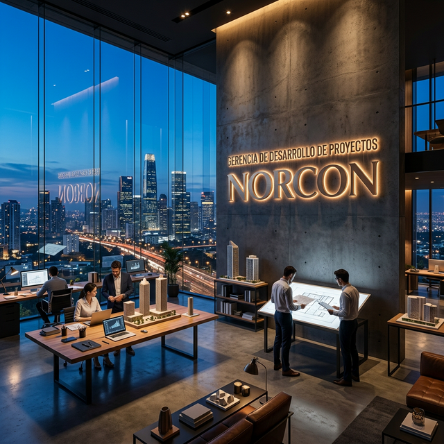
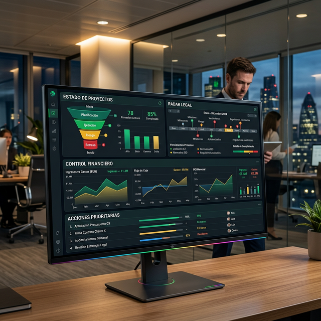
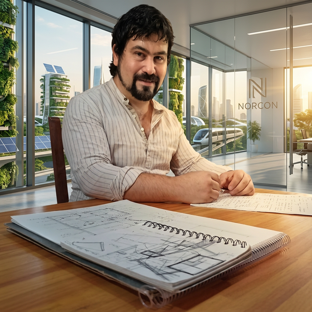

Fabricando Viabilidad. Del embudo estratégico al inicio de obra.
El objetivo de esta Gerencia no es diseñar planos, es proteger el capital, destrabar expedientes y estructurar negocios. Mi misión es que la Dirección General recupere su tiempo.

No arriesgamos capital en suposiciones. Cada proyecto debe superar cuatro capas de auditoría técnica y financiera antes de su ejecución.
Si el papel está manchado, el negocio se congela.
Cero riesgo legal. Revisión de escrituras, inhibiciones, hipotecas y cargas antes de cualquier avance.
Validación de m² construibles y factibilidad real de agua y energía. Sin sorpresas en la Municipalidad, DPEC ni Aguas de Corrientes S.A.
Ningún diseño avanza si ignora el clima del NEA. Evaluamos orientación, impacto solar pleno y respuestas térmicas.
Un diseño caprichoso en el Chaco/Corrientes dispara los costos constructivos y arruina la rentabilidad.
Cálculo de cabida y margen de ganancia real antes de invertir el primer peso. Modelo financiero con costo por m² local e indicadores de rentabilidad mínima aceptable.
Gestión activa y seguimiento riguroso para que cada m2 proyectado sea un m2 construido bajo estándar NORCON.
Diagnóstico legal y técnico de todos los proyectos en cartera.
Limpieza del embudo. Foco en proyectos con rentabilidad real.
Análisis de curvas de inversión, actualización del tablero Trello, revisión de expedientes y toma de decisiones financieras.
Gestión presencial en Municipio, DPEC y Aguas de Corrientes S.A. Destrabe de expedientes y negociación con organismos públicos.
Actualización de Trello, comunicación con equipos técnicos y reporte a Dirección General. Registro de avances y bloqueos.
Cuatro reportes automáticos semanales para que la Dirección tome decisiones con información real, no suposiciones.

Estado visual de cada proyecto en cartera. Verde / Amarillo / Rojo. Sin ambigüedades.
Tiempos reales de expedientes. Mapa de vencimientos, alertas tempranas y próximos movimientos en organismos.
Cashflow proyectado vs. real. Curva de inversión, margen acumulado y alertas de desvío por proyecto.
Decisiones específicas de la Dirección General. Listado concreto de aprobaciones, firmas o bloqueos pendientes de resolución.
El momento en que el proyecto de Desarrollo transfiere el mando con cero ambigüedades al equipo de Obra.

Construir un motor de viabilidad sólido para la paz mental de la Dirección.
Honrar la palabra, consolidar el legado familiar y dejar una marca de Arquitectura de Confianza en cada proyecto que atraviese esta Gerencia.
Al hacer clic se abrirá WhatsApp con un mensaje listo para enviar · +54 362 487-3262